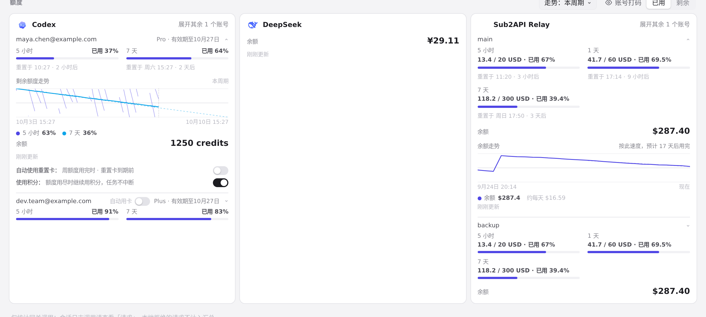
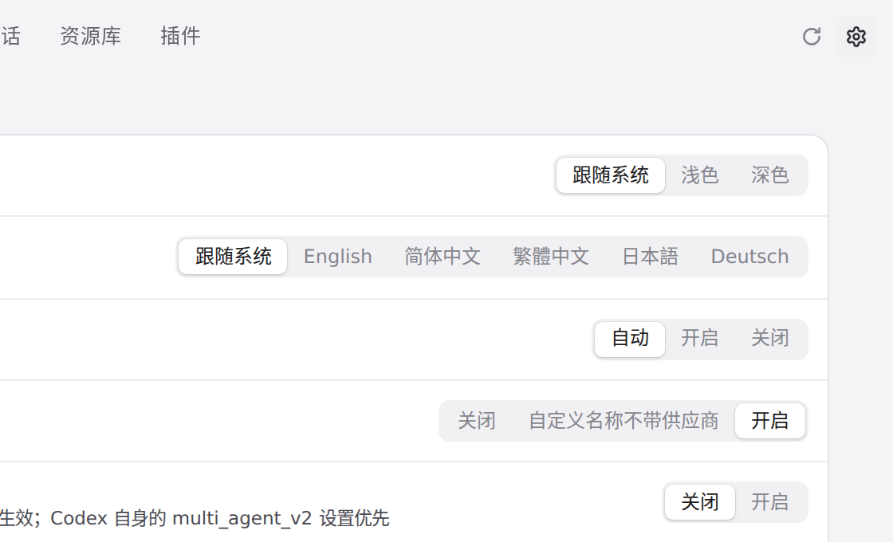
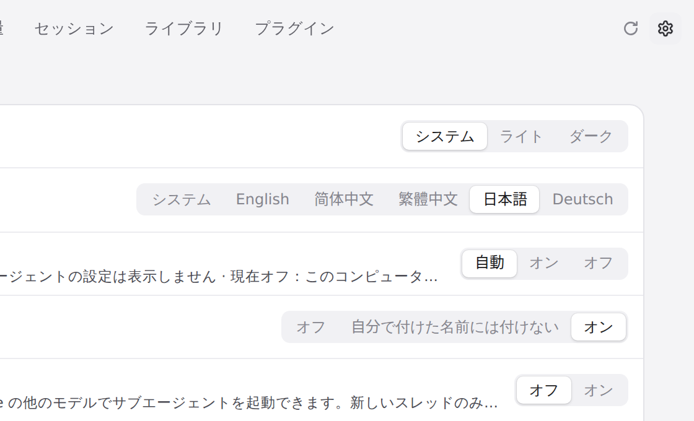
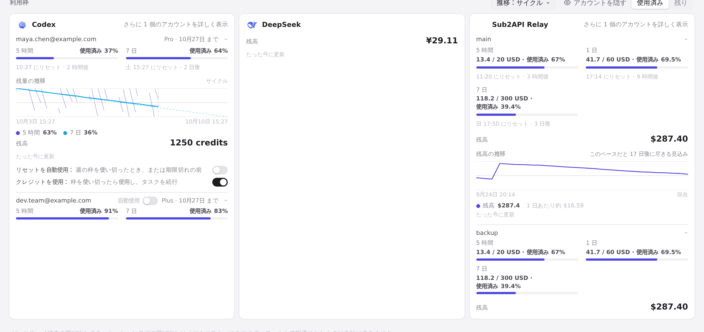

#1244 界面预览
commit bb287c2 · 回到 PR · 本 PR 只在 internal/gui/assets/i18n.js 里为 ZCode 插件领取提示的窗口名称「Gift plans to claim in the ZCode app」补上简体中文、繁体中文、日语、德语四条译文（外加测试与 README），界面其他部分没有改动。
红线是鼠标走过的轨迹，红色圆环是一次点击；底部文字是这一步在做什么。空格暂停，← → 逐段查看。

额度卡片上的窗口名称 · 用量 › 额度：各账号的额度窗口名称与用量都显示在卡片上

切换界面语言 · 设置 › 常规：界面语言在这里选择

切换界面语言 · 点完「日本語」后的设置页

切换界面语言 · 日本語界面下的用量 › 额度，窗口名称随界面语言显示